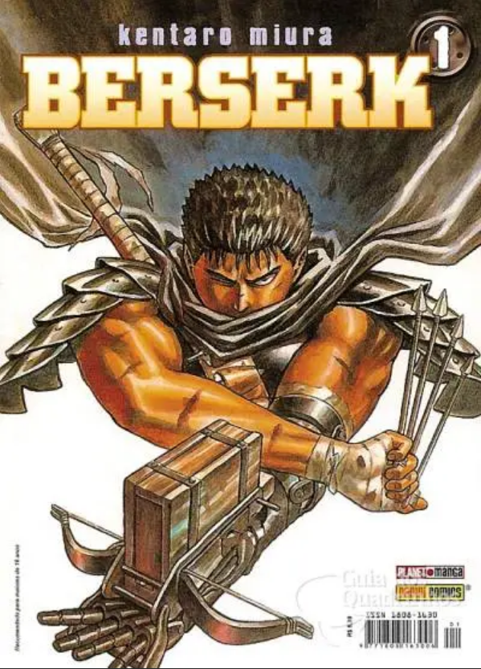
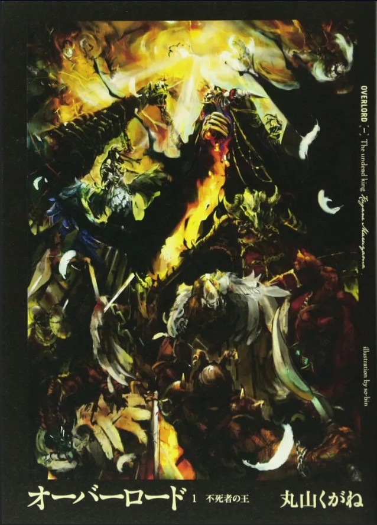
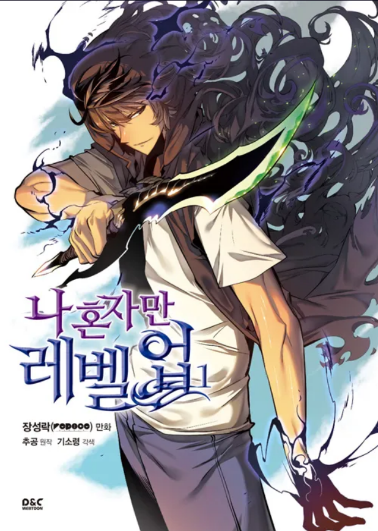

Biblioteca Proibida
Torça para que Beatrice não lhe pegue bisbilhotando sua preciosa coleção.
BLEACH
Vol. 1(Mangá)

Sinopse
Ichigo Kurosaki, 15 anos. Ocupação: Colegial. E então…
O ataque violento de um espírito maligno chamado “Hollow” faz suas irmãs caírem uma após a outra e
a única forma de salvá-las é se tornar um
SHINIGAMI e lutar!
Diante da morte iminente, o colegial Ichigo Kurosaki precisará tomar uma decisão que poderá mudar seu destino.
Fonte: Wikipedia|
BlogBBM
| Data da primeira publicação |
Autor |
Idioma Original |
Gêneros |
| 5 de Janeiro de 2002 |
Tite Kubo |
Japonês |
Ação,Aventura,Fantasia,Comédia dramática |
BERSERK
Vol. 1(Mangá)

Sinopse
O misterioso Guts, o “Espadachim Negro”, carrega em sua mão mecânica uma enorme espada, e em seu pescoço uma estranha marca que atrai forças demoníacas.
Em sua busca por vingança contra um antigo inimigo, nem tudo sai a seu favor, e ele recebe ajuda de uma fantástica criatura.
Fonte: Wikipedia|BlogBBM
| Data da primeira publicação |
Autor |
Idioma Original |
Gêneros |
| 26 de Novembro de 1990 |
Kentaro Miura |
Japonês |
Fantasia sombria,Épico,Espada e feitiçaria |
ONE PIECE
Vol. 1(Mangá)

Sinopse
A série centra-se em Monkey D. Luffy, um jovem que, inspirado por seu ídolo de infância e poderoso pirata Shanks, "o Ruivo",
sai em uma jornada do mar East Blue para encontrar o famoso tesouro One Piece e proclamar-se o Rei dos Piratas.
Em um esforço para organizar sua própria tripulação, os Piratas do Chapéu de Palha (麦わら海賊団, Mugiwara Kaizoku-dan),
Luffy salva e faz amizade com um espadachim chamado Roronoa Zoro, que se torna seu braço direito na busca pelo One Piece.
Eles estão acompanhados em sua jornada por Nami, uma navegadora e ladra; Usopp, um atirador e um mentiroso;
e Vinsmoke Sanji, um chef de cozinha mulherengo. Eles adquirem um navio chamado Going Merry (ゴーイング・メリー号, Gōingu Merī-gō)
e se envolvem em confrontos com famosos piratas do East Blue. Conforme Luffy e sua tripulação partem para novas aventuras, surgem novos membros na tripulação,
como Tony Tony Chopper, um médico e uma rena antropomórfica; Nico Robin, uma arqueóloga e ex-assassina; Franky, um carpinteiro ciborgue;
Brook, um esqueleto músico e espadachim; e Jinbe, um tritão homem-peixe e ex-membro dos Sete Corsários.
Uma vez que o Going Merry fica seriamente danificado, os Piratas do Chapéu de Palha adquirem um novo navio chamado Thousand Sunny (サウザンドサニー号, Sauzando Sanī-gō).
Juntos, eles encontram outros piratas, caçadores de recompensas, organizações criminosas, revolucionários, agentes secretos e soldados do corrupto Governo Mundial,
e vários outros amigos e inimigos, enquanto navegam nos mares em busca de seus sonhos.
Fonte: Wikipedia
| Data da primeira publicação |
Autor |
Idioma Original |
Gêneros |
| 24 de Dezembro de 1997 |
Eiichiro Oda |
Japonês |
Ação,Aventura,Fantasia |
OVERLORD
Vol. 1(Light Novel)

Sinopse
Era o último dia do jogo online. Momonga, jogador assíduo com um personagem de aparência esquelética,
esperava calmamente o servidor de seu tão amado jogo ser encerrado. Porém, mesmo depois do tempo estipulado, ele não foi deslogado.
Ao olhar ao redor, NPCs começaram a agir e pensar por conta própria, e a guilda parecia ter sido enviada para uma outra realidade…
Para tentar desvendar esse mistério, Momonga decide se tornar o maior feiticeiro nesse novo mundo e começa a espalhar a lenda da Guilda Ainz Ooal Gown!
Fonte: EditoraJBC|BlogBBM
| Data da primeira publicação |
Autor |
Idioma Original |
Gêneros |
| 30 de Julho de 2012 |
Kugane Maruyama;So-bin |
Japonês |
Fantasia,Ação,Aventura |
SOLO LEVELING
Vol. 1(Manhawa)

Sinopse
Portais estranhos surgiram em todo o mundo, permitindo a entrada de monstros terríveis. Para resistir ao invasor,
a humanidade desenvolveu poderes sobrenaturais. Graças a isso, eles puderam constituir um exército de intrépidos caçadores
passando pelos portais para atacar o inimigo no coração de suas masmorras. Batalhas impiedosas acontecem lá com os tesouros chave,
fabulosos. Sung Jin-Woo é o mais fraco dos caçadores. Ao participar de uma invasão, ele desmaia e é deixado para morrer.
Mas quando ele acorda no hospital, ele não se sente mais o mesmo e descobre, graças a uma interface virtual, que está ficando cada vez mais forte.
Fonte: frwiki.wiki|BlogBBM
| Data da primeira publicação |
Autor |
Idioma Original |
Gêneros |
| 26 de Setembro de 2019 |
Chugong;DUBU |
Koreano |
Ação,Fantasia sombria |